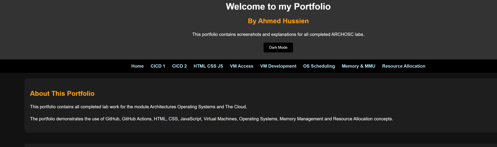

Introduction
In this lab I learned how HTML, CSS and JavaScript work together to create interactive websites.
Creating HTML Structure
I created HTML pages to build the structure of the portfolio website.

Styling Using CSS
I used CSS to style the website including colors, navigation bars, sections and images.

Using JavaScript
I used JavaScript to create a dark mode button using class toggling.

Dark Mode Feature
The dark mode feature changes the appearance of the website using JavaScript and CSS.

Reflection
This lab improved my understanding of website structure, styling and interactivity using HTML, CSS and JavaScript.